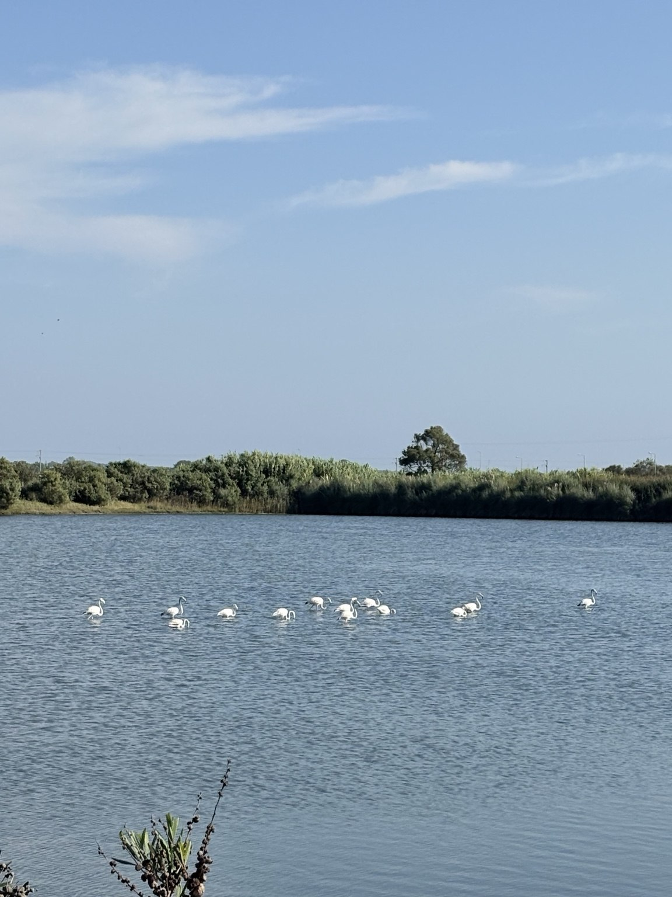
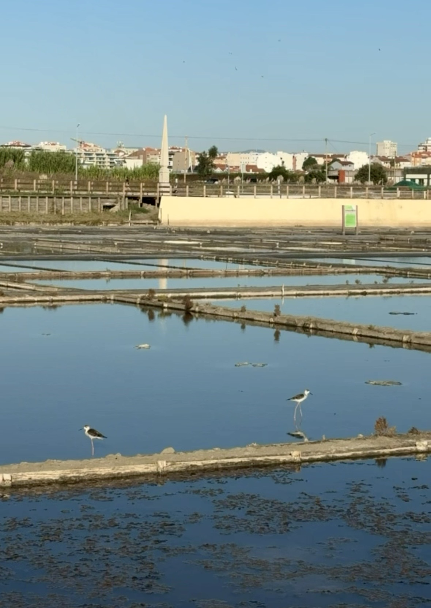
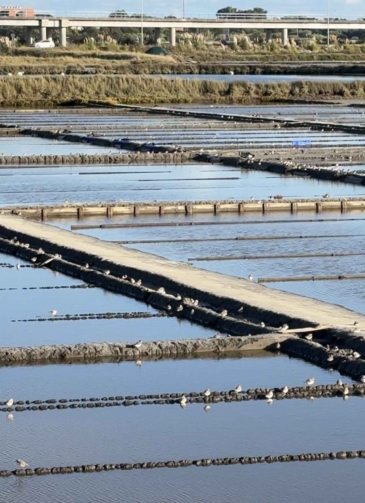

Why does this lagoon matter to birds?

Look at these birds. They are feeding in the water, with the city not far away. This is one of the things I love about Aveiro: nature is still here, right beside us.
But near Antiga Lota, more buildings are planned. Before that happens, I want to understand what we already know about the birds and the places they depend on.
Why do salt pans matter?

Think of a small bird looking for food in the mud. The tide comes in, the water rises, and the bird moves to another pool. It needs several places, not just one.
A scientific study from 2009 found that shorebirds in the Ria de Aveiro use salt pans and mudflats in different ways as water levels change. Even a salt pan that looks quiet or abandoned may be useful to them.
This helps explain why nearby places such as Troncalhada and Noeirinha matter. It does not prove that birds use the exact Antiga Lota construction site or that the planned buildings will harm them.
What does ZPE mean?
ZPE means Special Protection Area for birds (*Zona de Proteção Especial*). It's part of the European Natura 2000 network. The idea is simple: protect birds and the places they need to survive.
In March 2026, Portugal approved a new conservation plan for the Ria de Aveiro and Rio Vouga Natura 2000 areas. It includes plans to care for and restore salt pans (MC13) and to study and restore salt marshes and parts of the estuary (MC16). Salt marshes are low coastal wetlands where plants grow in salty, sometimes flooded ground.
In other words, protecting and restoring parts of the Ria is already part of the country's plan. That's important when we talk about what should happen next at Antiga Lota.
And what about the new buildings?

Homes and a hotel are planned for the former port area. Building could bring more noise and dust. Later there could be more cars, people and lights at night. We don't yet know what that might mean for the birds in the surrounding salt pans.
The protection plan does not automatically ban construction here. And the old bird study is not an assessment of this project. But they give us good reasons to ask questions.
So what should happen now?
We have a study showing why salt pans matter to birds. We have a new government plan to protect and restore parts of the Ria. And we have plans to build beside this landscape.
Were these things considered together? Did anyone ask bird experts? Are there studies of noise, light and the nearby habitats? Was restoring the former port land properly considered as another option?
If those studies exist, I'd like everyone to be able to read them. If they don't, we need to understand why. I don't want to claim that the project is illegal without evidence. I just don't think we should change this place without first understanding what lives around it.
These birds already have a home here. Surely their future deserves a place in the discussion.
Sources: Morgado et al., 2009 · Conservation plan 115/2026/1 · ICNF maps · Land-transfer decision 34/2024. These sources cover the wider Ria; they do not prove impacts of the Antiga Lota project.
Porque é que esta ria é tão importante para as aves?
Olhem para estas aves. Estão a alimentar-se na água, mesmo perto da cidade. É uma das coisas de que mais gosto em Aveiro: a natureza ainda está aqui, tão perto de nós.
Mas junto à Antiga Lota estão previstos novos edifícios. Antes disso acontecer, quero perceber o que já sabemos sobre as aves e os lugares de que precisam.
Porque são tão importantes as salinas?
Imaginem uma pequena ave à procura de alimento no lodo. A maré sobe, a água cobre aquele lugar e a ave procura outro tanque. Precisa de vários lugares, não apenas de um.
Um estudo científico de 2009 mostrou que as aves limícolas da Ria de Aveiro usam as salinas e os lodos de formas diferentes conforme o nível da água. Até uma salina que parece abandonada pode ser importante para elas.
Isso ajuda a perceber o valor de lugares próximos, como a Troncalhada e a Noeirinha. Mas o estudo não prova que as aves usam o terreno exato da Antiga Lota onde se prevê construir, nem que as obras lhes vão causar danos.
O que significa ZPE?
ZPE significa Zona de Proteção Especial para aves. Faz parte da rede europeia Natura 2000. A ideia é simples: proteger as aves e os lugares de que precisam para viver.
Em março de 2026, Portugal aprovou um novo plano de conservação para as áreas Natura 2000 da Ria de Aveiro e do Rio Vouga. Inclui medidas para cuidar e recuperar as salinas (MC13) e para estudar e recuperar sapais e zonas do estuário (MC16). Os sapais são zonas húmidas costeiras com plantas adaptadas à água salgada e às inundações periódicas.
Ou seja, proteger e recuperar partes da Ria já faz parte dos planos do país. Isso é importante quando discutimos o futuro da Antiga Lota.
E os novos edifícios?
Estão previstos habitação e um hotel na antiga zona portuária. As obras podem trazer mais ruído e poeiras. Depois, poderá haver mais carros, pessoas e luz durante a noite. Ainda não sabemos o que isso poderá significar para as aves nas salinas próximas.
O plano de proteção não proíbe automaticamente construir aqui. E o estudo antigo sobre as aves não é uma avaliação deste projeto. Mas ambos nos dão boas razões para fazer perguntas.
E agora?
Temos um estudo que mostra a importância das salinas para as aves. Temos um novo plano do Estado para proteger e recuperar partes da Ria. E temos planos para construir junto a esta paisagem.
Será que tudo isto foi considerado em conjunto? Foram ouvidos especialistas em aves? Existem estudos sobre o ruído, a iluminação e os habitats próximos? A recuperação dos antigos terrenos portuários foi realmente estudada como alternativa?
Se esses estudos existem, gostava que todos os pudessem consultar. Se não existem, precisamos de perceber porquê. Não quero afirmar que o projeto é ilegal sem provas. Só acho que não devíamos transformar este lugar sem primeiro compreender a vida que existe à sua volta.
Estas aves já têm aqui a sua casa. O seu futuro também merece fazer parte desta conversa.
Fontes: Morgado e colegas, 2009 · Plano 115/2026/1 · Mapas do ICNF · Decisão 34/2024. Estas fontes dizem respeito à Ria no seu conjunto e não demonstram impactes do projeto da Antiga Lota.
Read the original researchConsultar o estudo original
2010 counts by area · Table 4.3.16 · p. 84 ↗Contagens de 2010 por área · Tabela 4.3.16 · p. 84 ↗
Important areas for shorebirds · map · p. 87 ↗Áreas importantes para limícolas · mapa · p. 87 ↗